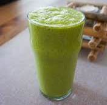

Energy boost, Immune system, and Weight loss smoothies
Immune System Smoothies
These smoothies are green smoothies. These smoothies contain Vitamin C and it increases the production of white blood cells. Why is the increase of white blood cells important? Well this allows your body to help fight infections or may potentially decrease the amount of time of an infection. Also, these smoothies help balance your hormones as a plus!
Spa Smoothie
Materials
Blender and cup measurements
Ingrediants
1 scoop vanilla protein powder
1/4 avocado
1 to 2 tbsp. chia seeds
juice of 1 lemon
handful of spinach (fresh or frozen)
1 small Persian cucumber
1/4 cup fresh mint leaves
2 cups unsweetened nut milk
Instructions
Blend all of the ingredients together at high speed until you have your desired consistency.

Coconut Turmeric Cream
Materials
Blender
Ingrediants
1 serving Primal Kitchen Vanilla Coconut Collagen Protein
1 tbsp. almond butter
2 tbsp. flax meal
handful of kale
1 cup unsweetened almond milk
Instructions
Blend all of the ingredients together at high speed until you have your desired consistency.
Acai Green
Materials
Blender
Ingrediants
1 serving organic vanilla pea protein
1/4 – 1/2 avocado
1 tbsp. chia seeds
handful of spinach
1 tbsp. acai powder
1/4 cup organic frozen or fresh wild blueberries
2 cups unsweetened almond milk
Instructions
Blend all of the ingredients together at high speed until you have your desired consistency.
Energy Boost Smoothies
These are detox smoothies. It helps clear the toxins in your body and help lose weight. They typically contain fruits or green veggies. They also typically have water that helps boost your metabolism or keep you hydrated.
Berry Boost Smoothie
Materials
Blender and cup measurements
Ingrediants
1/2 cup blueberries
1/2 cup blackberries
1/2 cup cherries
1 banana
1 cup almond milk
1 tablespoon flax oil
1 teaspoon honey
dash of cinnamon
Instructions
Blend all of the ingredients together until smooth and creamy.
Morning Sunshine Smoothie
Materials
Blender
Ingrediants
2-3 freshly-juiced tangerines
1 ruby red grapefruit (juiced)
A handful of frozen strawberries
Peel and juice the tangerines with the grapefruit, and puree the blended juice with the frozen strawberries.
Instructions
Blend all of the ingredients together until smooth and creamy.
Paradise Smoothie
Materials
Blender
Ingrediants
4 or 5 slices of pineapple
1/4 cup water
2 oranges or tangerines, peeled and sectioned
1 large handful berries (your choice)
1 banana, peeled
a handful of ice
Instructions
Juice the oranges and pineapple, adding a bit of water. Then transfer this juice to the blender. Add the rest of the ingredients. Start off slow to crush the ice and make it high until it's smooth.
Mango Lassi
Materials
Blender and cup measurements
Ingrediants
1 mango, peeled and sliced
1 cup milk of your choice
1/2 cup plain or peach low-fat yoghurt
1 tsp honey or agave syrup
a few shakes each of cinnamon and cardamom
Instructions
Add all ingredients to your blender and blend for a minute or so until absolutely smooth.
Weight Loss
These are detox smoothies. It helps clear the toxins in your body and help lose weight. They typically contain fruits or green veggies. They also typically have water that helps boost your metabolism or keep you hydrated.
Kale and Apple Green Detox Smoothie
Materials
Blender
Ingrediants
⅔ cup almond milk (unsweetened)
¾ cup ice
1 ½ cups kale (chopped)
1 stalk celery (chopped)
½ red or green apple (cored and chopped)
1 tbsp ground flax seed
1 teaspoon honey (optional)
Instructions
Blend all of the ingredients together at high speed until you have your desired consistency.
Avocado Detox Smoothie
Materials
Blender
Ingrediants
1 1/2 cups apple juice
2 cups spinach or kale (stemmed and chopped)
1 apple (unpeeled, cored, and chopped)
1/2 avocado (chopped)
Instructions
Blend all of the ingredients together at high speed until you have your desired consistency.
Kale Strawberry Banana Detox Smoothie
Materials
Blender
Ingrediants
1 banana
1 cup yogurt (plain)
1 cup strawberries (fresh or frozen)
1 cup Kale (chopped)
1 cup ice
Instructions
Blend all of the ingredients together at high speed until you have your desired consistency.